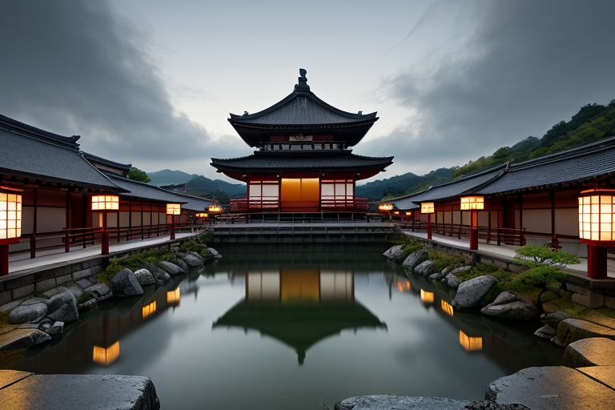
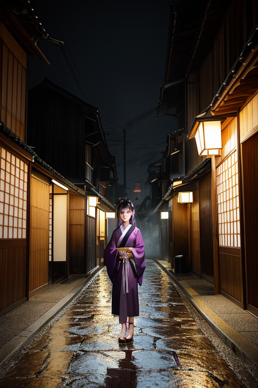
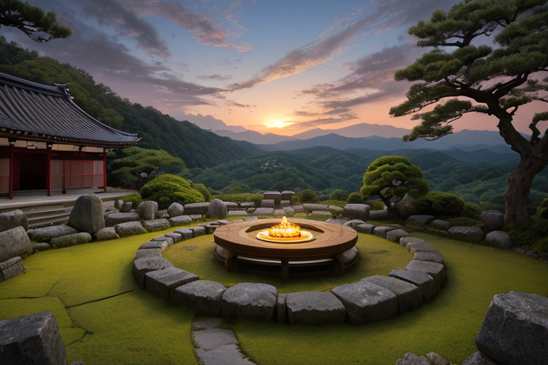
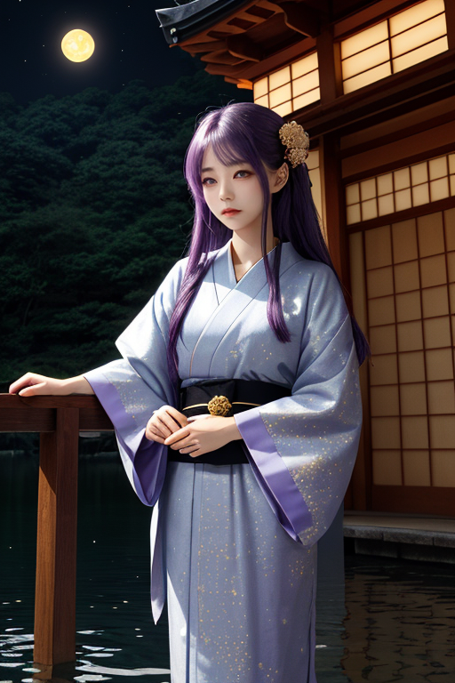
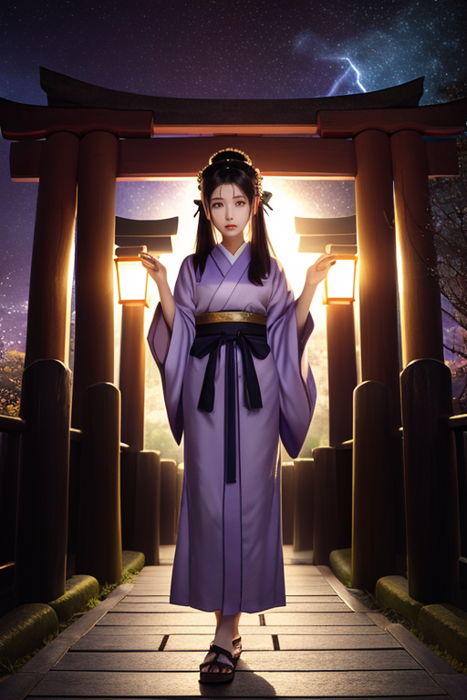

第一章 現実の京都
あなたはまだ気づいていない。この土地にも、王がいることを。
清水寺の舞台から京の街を見下ろす観光客たちは、その絶景に歓声を上げる。彼らの足元、舞台を支える巨大な柱の根本には、目に見えない封印の印が幾重にも刻まれている。石畳の道を歩く舞妓の裾がかすかに揺れるたび、その動きは微細な歴史の歪みを鎮めるリズムとなる。鴨川のせせらぎは、千年の時をかけて磨かれた調整の音色だ。
ここは、歪みの列島の中でも特に「重い」場所である。応仁の乱の血の記憶、明治維新で政治の灯が消えかけた喪失感、無数の戦火と復興の繰り返し。それらすべてのエネルギーは、完全には消え去らない。消える代わりに、封印され、層をなしてこの土地の下に眠っている。金閣寺の鏡湖池に映るのは、建物の美しさだけでなく、焼失という破壊の記憶を封じた結界の輝きでもある。訪れる人々はその静謐さに安らぎを覚えるが、それは単なる平穏ではない。膨大な「歴史の圧」を、無数の目に見えない印章で丁寧に封じ込めた結果の、危うい均衡なのだ。
王は、この封印の網の目の中に立っている。

第二章「歪みの兆候」
祇園花見小路の石畳を、夕刻の雨が仄かに濡らしていた。シレアは、路地裏の軒下に浮かぶ微かな光の紋様を凝視する。封印の結界に、ほんのわずかなほつれが生じていた。それは、応仁の乱の戦火の記憶を封じた結界の一部だ。通常、人の目には見えないこの亀裂から、微細な「歴史の歪み」が漏れ出し、周囲の空気を僅かに淀ませる。
「増えています」シレアの声は、雨音に溶けるほど静かだった。「明治の遷都による断絶の記憶。先の大戦の無念。観光地化による軋み。全てを封じ込め続けた結果、結界そのものが飽和しつつあります」
キョウトリア・シールは、指先で虚空に紫と金の輪を描いた。漏れ出す歪みを新たな印章で覆う。だが、それは対症療法に過ぎない。守るために封じ、封じたものをさらに守る。この無限連鎖が、王国の基盤を静かに蝕んでいた。
彼はふと考える。この完璧なまでの封印が、この街の未来そのものを、かつてのような大胆な変革から「閉ざして」はいないか。守り続けることが、新たな息吹を阻む檻になっているのではないか。鴨川の流れは変わらぬが、その底には、語られることのない記憶が、石のように積み重なっている。

第三章 王の葛藤
清水寺の舞台から、京の街並みを見下ろす。彼、キョウトリア・シールは、掌に浮かぶ紫と金の重円結界を静かに見つめていた。完璧な封印。千年の歴史の歪みを、この印章で封じ込めてきた。応仁の乱の狂気も、明治の遷都による喪失感も、すべて結界の内側で結晶化され、無害な記憶の層へと沈殿させた。
しかし、掌の印章が、今、微かに熱を帯びている。封じたはずの「何か」が、結界の内側で脈打つ。それは災害の歪みではない。この街そのものが、長い封印の果てに内側に蓄積した、一種の「澱」のようなものだ。守るために封じ、封じたものを守る。その無限連鎖が、街の可能性、未来への跳躍を、知らぬ間に閉ざしてはいないか。
嵐山の竹林が風にざわめく。その音は、封印の外から来るのではなく、封じられた記憶の隙間から漏れ出る、かすかなため息のように聞こえた。彼は目を閉じた。解放すれば、封じられた歴史の激情が一気に噴出するかもしれない。だが、このままでは、街は美しいがらくたの箱詰めとなり、やがて息絶える。守護者である王が、初めて、自らの存在意義に揺らぎを覚える瞬間だった。

第四章 妖精との対話
金閣寺の鏡湖池に映る金色は、夕暮れで鈍く沈んでいた。シレアは、池の縁に立つ主の隣に、声もなく現れた。
「王よ。あなたは迷っています」
その声は、古い経典のページをめくる音のようだった。
「この結界は、応仁の乱の業火を封じ、明治の激動で失われかけた『古きもの』を守るために張られました。しかし、それは同時に、この地が本来持つはずだった、乱れたり壊れたりしながらも新たに生まれ変わる『力』をも封じています」
祇園の石畳を、舞妓の小さい足音が過ぎる。カグラリスが、その余韻をそっと整えながら言った。
「雅は、形を守ることでしか継承できません。でも、形だけが全てでしょうか。封じられた激情の下には、この土地が次へと駆け出そうとした、無数の『かもしれなかった未来』が眠っています」
王は、自らの手のひらを見つめた。紫と金の紋章が微かに脈打っていた。守ることは、確かに未来への跳躍を、知らぬ間に閉ざしていた。この美しい封印が、街の魂を、ゆっくりと窒息させていることに、彼は今、気づかされた。

第五章 微調整と余韻
王は、伏見稲荷大社の千本鳥居の闇に立っていた。手のひらの紋章が、かつてない重さを帯びている。彼は、歪みを調整する微力を振り絞り、崩れかけた封印の亀裂を修復していった。紫と金の光が、石畳の上で重円を描き、歴史の激情を再び静謐の中へと沈めていく。シレアとカグラリスが結界を支え、嵐山の竹林はかすかにざわめき、また静かになった。
全てが元通りになる。清水寺の舞台は揺れず、花見小路の石畳は濡れたまま光る。彼は、この街の「かもしれなかった未来」を、再び自らの内に封じ込めた。守ることは、確かに何かを閉ざす。跳躍する可能性を、激情を、危ういほどの輝きを。代償は、この胸に深く刻まれる、言いようのない喪失感だった。
鴨川の水音だけが、封じられたものたちの名もなざわめきを、運んでいく。
あなたの町にも、王がいる。